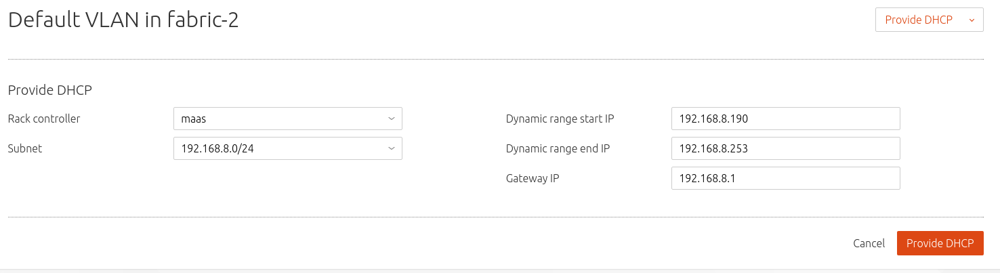

Canonical MAAS is a deployment tool that can give a bare metal
life by putting an OS on it. Working together with Juju, they can
setup a cluster of applications quite quickly. Think of them as a
package manage like Ubuntu's apt-get, but in the context of a
cloud. Interesting.
This article shows how to setup a virtual lab so one can play with
these two tools and get a sense of what they do. The whole setup is
based on Virtualbox. One thing I found out the hard way is that
despite their nice looking website and rather recent project history,
there is no single document that can bring this environment live from
A to Z. All official documents have out-of-date commands here and
there which made following them useless. I consulted countless blogs,
posts, chasing down bugs (or I thought they were bugs), and finally
when everything works, it became so obvious and simple. Hopefully this
article will shorten this journey for readers and they can have this
environment easily.
Baseline environment
Virtualbox 5.1.10 and its extension pack. I could not verify why
this particular version worked. I had 5.1.8 and the first
successful trial occurred after I upgraded to 5.1.10. Was that a
coincidence? Without being able to reproduce this, I am merely
documenting what I have.
Network topology
Getting network configurations right is the key for success. The
biggest gotcha is that MAAS server must be the DHCP server on
its managing subnet! The official document talks about "if there is an
existing DHCP, points it to the MAAS server", huh? I never figured
that out, so don't listen to that.
There will be two VMs and one internal network, intnet1.
VM #1: is the MAAS server. Use Xenial 16.04 desktop image.
VM #2: is an emulated BM.
intnet1: is a subnet (192.168.8.0/24) that MAAS server will
live together with its managed nodes (I call them targets).
MAAS Virtualbox lab networking topology
Setup instructions
Personally I dislike those step-by-step instructions because first of
all, it is intimidating; secondly, each environment is a bit
different, so how confident user will feel to duplicate other's
success? Not much. I'll explain thoughts and lessons learned along the
way. I think that is more useful even from the point that Google may
pick up a few words here and will help others if they search.
Install MAAS server, admin account, subnet
MAAS server uses Ubuntu 16.04 Xenial image. Setup the
networking to have two interfaces — one uses default NAT so you
have internet access, while the other uses Internal Network with
name intnet1.
Defining the subnet managed by MAAS server is the most imporant step
in MAAS configuration.
Config subnet intnet1. Define it as 192.168.8.x (This is
completly arbitrary. Use whatever network range you want to
use). Use ifconfig to find out interface name that corresponds to
intnet1 (a clue: the one that has no IP assigned):
At Virtualbox level we have added an interface to this VM using
Internal Network, we need then define this network in VM. Also,
defining this before installing MAAS will have MAAS installer pick
up this subnet automatically so to save some manual work down the
road.
Install MAAS is simple. Don't bother with other methods.
Create SSH key and copy content from ~/.ssh/id_rsa.pub:
```shell
mkdir .ssh
ssh-keygen -t rsa
less ~/.ssh/id_rsa.pub
```
Login in http://localhost:5240/MAAS using admin created in step
3, goto user preference (click user name).
select upload and paste step 4's content into the text box. This is
the public key that will be copied to each MAAS target at
deployment so later you can SSH into these targets without knowing
the password.
MAAS upload SSH key
Setup MAAS gateway. This was actually asked when installing MAAS
server. But I missed this and ended up spending 5 days debugging a
strange issue where provisioned node can not ping outside world.
In short, set MAAS default gateway to be the IP of the MAAS
server, in our case, 192.168.8.1!
MAAS default gateway
At this point, the MAAS server is installed and user can login the web
admin console. Next, setup firewall rules on MAAS server so it can be
the router for managed subnet.
MAAS server firewall rules
Install UFW. UFW is infinitely easier to use than iptables. Making
the MAAS server as a router is necessary because targets, once
acquired an OS, will need internet access in order to APT other
things. (If using real metal server, the server can be connected to
multiple VLANs among which one is providing internet access.)
Masquerading
Following the instructions to enable default port forwarding:
Packet forwarding needs to be enabled in ufw. Two configuration
files will need to be adjusted, in /etc/default/ufw change the
DEFAULT_FORWARD_POLICY to ACCEPT:
Enabling UFW will deny all access (except the current ssh
session). So before anything, allow port 22!
To config MAAS server to route 192.168.8.x subnet traffic to internet
using UFW is simple. Using ifconfig to find the interface name that
is connected to the internet(NAT), in this example, enp0s3:
```shell
nano /etc/ufw/before.rules
```
Paste this at the bottom of the file, after the COMMIT that has
already been in that document:
What this does is to make enp0s3 as the router for subnet
192.168.8.x ← welcome the internet!
Ports
UFW will erect a firewall that blocks everything by default! We
have poked holes for port 22 to allow SSH. More need to be done:
Allow http 80: ufw allow http
Allow ping: ufw allow 53
Allow region controller API port: 5240
Allow Bootp server and client: 67, 68
Allow Img service: 5248
Allow tftp: 69, 5244
Allow domain service: 5246
Allow rndc service: 5247
Allow iscsi: 3260
Allow ntp: 123
Allow MAAS bootstrap sever: 8000
Finally, sudo ufw enable. Our GFW is up.
MAAS as DHCP server
As I have mentioned, the MAAS server node must be the DHCP
server on subnet 192.168.8.x. No exception!
MAAS admin web is the tool to use for this configuration.
Login into http://192.168.8.1/MAAS/, goto Subnets and select
the VLAN ← this is how you can turn on DHCP on a subnet:

MAAS DHCP config
Click Vlan column on 192.168.8.0/24 subnet row to get to the
Vlan configuration page. Take action to enable DHCP. Change the
gateway to 192.168.8.1, which is this server's static IP on this
subnet.
MAAS admin DHCP config
We have done the hard part — setting up the MAAS server. In our
next article, I'll show you what MAAS can do for fun →
brining up a bare metal machine to life. Stay tuned.